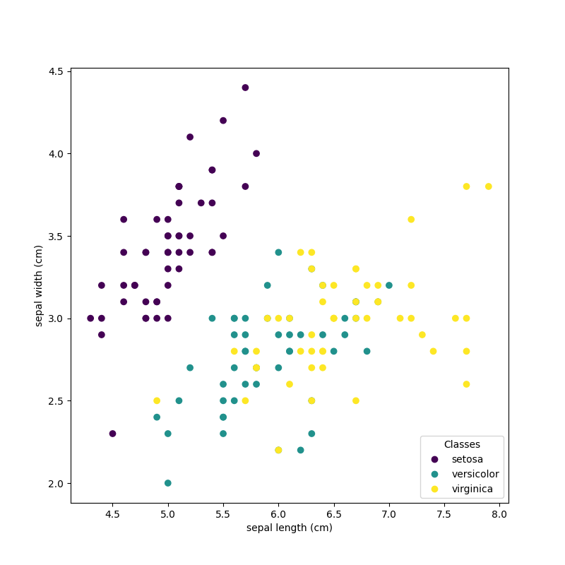
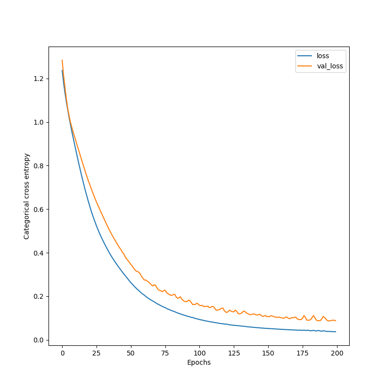
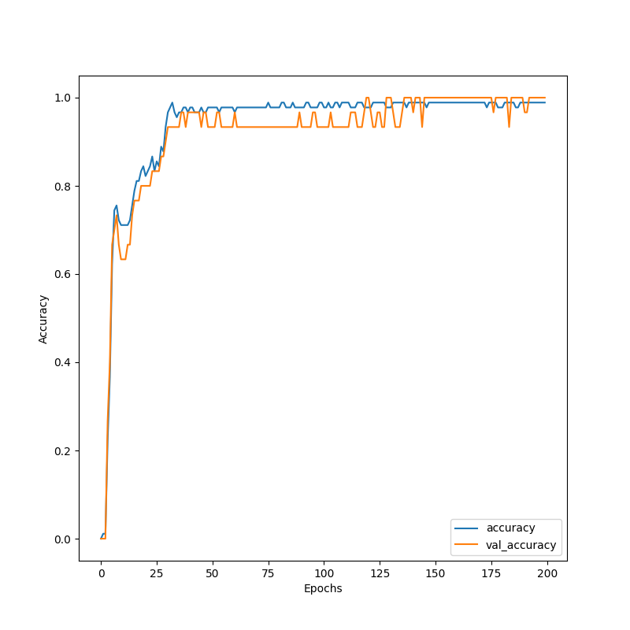

Note
Go to the end to download the full example code.
Bidirectional recurrent layers
This script implements a model to classify the iris dataset. This model uses LSTM and RNN layers with a Bidirectional wrapper for the predictions.
- 
- 
- 
torch.Size([150, 4, 1]) torch.Size([150, 3])
Model summary:
Input - Output: ((4, 1))
Bidirectional - (Input, Output): ((4, 1), (4, 40))
LSTM - (Input, Output): ((4, 1), (4, 20)) - Parameters: 700
ReLU - Output: ((4, 20))
LSTM - (Input, Output): ((4, 1), (4, 20)) - Parameters: 700
ReLU - Output: ((4, 20))
RNN - (Input, Output): ((4, 40), 3) - Parameters: 543
Softmax - Output: (3)
Total number of parameters: 1943
Epoch: 1 - Metrics: {'loss': '1.2365', 'accuracy': '0.0000', 'val_loss': '1.2841', 'val_accuracy': '0.0000'}
Epoch: 2 - Metrics: {'loss': '1.1817', 'accuracy': '0.0111', 'val_loss': '1.2152', 'val_accuracy': '0.0000'}
Epoch: 3 - Metrics: {'loss': '1.1352', 'accuracy': '0.0111', 'val_loss': '1.1621', 'val_accuracy': '0.0000'}
Epoch: 4 - Metrics: {'loss': '1.0940', 'accuracy': '0.2222', 'val_loss': '1.1087', 'val_accuracy': '0.2667'}
Epoch: 5 - Metrics: {'loss': '1.0577', 'accuracy': '0.3667', 'val_loss': '1.0644', 'val_accuracy': '0.4000'}
Epoch: 6 - Metrics: {'loss': '1.0217', 'accuracy': '0.6222', 'val_loss': '1.0307', 'val_accuracy': '0.6667'}
Epoch: 7 - Metrics: {'loss': '0.9893', 'accuracy': '0.7444', 'val_loss': '1.0000', 'val_accuracy': '0.7000'}
Epoch: 8 - Metrics: {'loss': '0.9576', 'accuracy': '0.7556', 'val_loss': '0.9768', 'val_accuracy': '0.7333'}
Epoch: 9 - Metrics: {'loss': '0.9278', 'accuracy': '0.7222', 'val_loss': '0.9539', 'val_accuracy': '0.6667'}
Epoch: 10 - Metrics: {'loss': '0.8983', 'accuracy': '0.7111', 'val_loss': '0.9340', 'val_accuracy': '0.6333'}
Epoch: 11 - Metrics: {'loss': '0.8692', 'accuracy': '0.7111', 'val_loss': '0.9134', 'val_accuracy': '0.6333'}
Epoch: 12 - Metrics: {'loss': '0.8404', 'accuracy': '0.7111', 'val_loss': '0.8912', 'val_accuracy': '0.6333'}
Epoch: 13 - Metrics: {'loss': '0.8122', 'accuracy': '0.7111', 'val_loss': '0.8709', 'val_accuracy': '0.6667'}
Epoch: 14 - Metrics: {'loss': '0.7846', 'accuracy': '0.7222', 'val_loss': '0.8507', 'val_accuracy': '0.6667'}
Epoch: 15 - Metrics: {'loss': '0.7578', 'accuracy': '0.7556', 'val_loss': '0.8288', 'val_accuracy': '0.7333'}
Epoch: 16 - Metrics: {'loss': '0.7318', 'accuracy': '0.7889', 'val_loss': '0.8090', 'val_accuracy': '0.7667'}
Epoch: 17 - Metrics: {'loss': '0.7067', 'accuracy': '0.8111', 'val_loss': '0.7895', 'val_accuracy': '0.7667'}
Epoch: 18 - Metrics: {'loss': '0.6824', 'accuracy': '0.8111', 'val_loss': '0.7695', 'val_accuracy': '0.7667'}
Epoch: 19 - Metrics: {'loss': '0.6591', 'accuracy': '0.8333', 'val_loss': '0.7497', 'val_accuracy': '0.8000'}
Epoch: 20 - Metrics: {'loss': '0.6366', 'accuracy': '0.8444', 'val_loss': '0.7316', 'val_accuracy': '0.8000'}
Epoch: 21 - Metrics: {'loss': '0.6151', 'accuracy': '0.8222', 'val_loss': '0.7143', 'val_accuracy': '0.8000'}
Epoch: 22 - Metrics: {'loss': '0.5947', 'accuracy': '0.8333', 'val_loss': '0.6973', 'val_accuracy': '0.8000'}
Epoch: 23 - Metrics: {'loss': '0.5752', 'accuracy': '0.8444', 'val_loss': '0.6802', 'val_accuracy': '0.8000'}
Epoch: 24 - Metrics: {'loss': '0.5568', 'accuracy': '0.8667', 'val_loss': '0.6638', 'val_accuracy': '0.8333'}
Epoch: 25 - Metrics: {'loss': '0.5395', 'accuracy': '0.8333', 'val_loss': '0.6476', 'val_accuracy': '0.8333'}
Epoch: 26 - Metrics: {'loss': '0.5229', 'accuracy': '0.8556', 'val_loss': '0.6323', 'val_accuracy': '0.8333'}
Epoch: 27 - Metrics: {'loss': '0.5072', 'accuracy': '0.8444', 'val_loss': '0.6178', 'val_accuracy': '0.8333'}
Epoch: 28 - Metrics: {'loss': '0.4921', 'accuracy': '0.8889', 'val_loss': '0.6040', 'val_accuracy': '0.8667'}
Epoch: 29 - Metrics: {'loss': '0.4779', 'accuracy': '0.8778', 'val_loss': '0.5902', 'val_accuracy': '0.8667'}
Epoch: 30 - Metrics: {'loss': '0.4643', 'accuracy': '0.9333', 'val_loss': '0.5760', 'val_accuracy': '0.9000'}
Epoch: 31 - Metrics: {'loss': '0.4514', 'accuracy': '0.9667', 'val_loss': '0.5624', 'val_accuracy': '0.9333'}
Epoch: 32 - Metrics: {'loss': '0.4391', 'accuracy': '0.9778', 'val_loss': '0.5489', 'val_accuracy': '0.9333'}
Epoch: 33 - Metrics: {'loss': '0.4270', 'accuracy': '0.9889', 'val_loss': '0.5352', 'val_accuracy': '0.9333'}
Epoch: 34 - Metrics: {'loss': '0.4150', 'accuracy': '0.9667', 'val_loss': '0.5217', 'val_accuracy': '0.9333'}
Epoch: 35 - Metrics: {'loss': '0.4036', 'accuracy': '0.9556', 'val_loss': '0.5088', 'val_accuracy': '0.9333'}
Epoch: 36 - Metrics: {'loss': '0.3926', 'accuracy': '0.9667', 'val_loss': '0.4966', 'val_accuracy': '0.9333'}
Epoch: 37 - Metrics: {'loss': '0.3821', 'accuracy': '0.9667', 'val_loss': '0.4847', 'val_accuracy': '0.9667'}
Epoch: 38 - Metrics: {'loss': '0.3722', 'accuracy': '0.9778', 'val_loss': '0.4734', 'val_accuracy': '0.9667'}
Epoch: 39 - Metrics: {'loss': '0.3625', 'accuracy': '0.9778', 'val_loss': '0.4626', 'val_accuracy': '0.9333'}
Epoch: 40 - Metrics: {'loss': '0.3534', 'accuracy': '0.9667', 'val_loss': '0.4516', 'val_accuracy': '0.9667'}
Epoch: 41 - Metrics: {'loss': '0.3442', 'accuracy': '0.9778', 'val_loss': '0.4414', 'val_accuracy': '0.9667'}
Epoch: 42 - Metrics: {'loss': '0.3354', 'accuracy': '0.9778', 'val_loss': '0.4306', 'val_accuracy': '0.9667'}
Epoch: 43 - Metrics: {'loss': '0.3268', 'accuracy': '0.9667', 'val_loss': '0.4212', 'val_accuracy': '0.9667'}
Epoch: 44 - Metrics: {'loss': '0.3184', 'accuracy': '0.9667', 'val_loss': '0.4118', 'val_accuracy': '0.9667'}
Epoch: 45 - Metrics: {'loss': '0.3100', 'accuracy': '0.9667', 'val_loss': '0.4016', 'val_accuracy': '0.9667'}
Epoch: 46 - Metrics: {'loss': '0.3021', 'accuracy': '0.9778', 'val_loss': '0.3933', 'val_accuracy': '0.9333'}
Epoch: 47 - Metrics: {'loss': '0.2939', 'accuracy': '0.9667', 'val_loss': '0.3800', 'val_accuracy': '0.9667'}
Epoch: 48 - Metrics: {'loss': '0.2860', 'accuracy': '0.9667', 'val_loss': '0.3714', 'val_accuracy': '0.9667'}
Epoch: 49 - Metrics: {'loss': '0.2782', 'accuracy': '0.9778', 'val_loss': '0.3634', 'val_accuracy': '0.9333'}
Epoch: 50 - Metrics: {'loss': '0.2705', 'accuracy': '0.9778', 'val_loss': '0.3553', 'val_accuracy': '0.9333'}
Epoch: 51 - Metrics: {'loss': '0.2630', 'accuracy': '0.9778', 'val_loss': '0.3464', 'val_accuracy': '0.9333'}
Epoch: 52 - Metrics: {'loss': '0.2560', 'accuracy': '0.9778', 'val_loss': '0.3396', 'val_accuracy': '0.9333'}
Epoch: 53 - Metrics: {'loss': '0.2493', 'accuracy': '0.9778', 'val_loss': '0.3290', 'val_accuracy': '0.9667'}
Epoch: 54 - Metrics: {'loss': '0.2428', 'accuracy': '0.9667', 'val_loss': '0.3213', 'val_accuracy': '0.9667'}
Epoch: 55 - Metrics: {'loss': '0.2363', 'accuracy': '0.9778', 'val_loss': '0.3151', 'val_accuracy': '0.9333'}
Epoch: 56 - Metrics: {'loss': '0.2306', 'accuracy': '0.9778', 'val_loss': '0.3135', 'val_accuracy': '0.9333'}
Epoch: 57 - Metrics: {'loss': '0.2254', 'accuracy': '0.9778', 'val_loss': '0.3095', 'val_accuracy': '0.9333'}
Epoch: 58 - Metrics: {'loss': '0.2191', 'accuracy': '0.9778', 'val_loss': '0.3000', 'val_accuracy': '0.9333'}
Epoch: 59 - Metrics: {'loss': '0.2134', 'accuracy': '0.9778', 'val_loss': '0.2892', 'val_accuracy': '0.9333'}
Epoch: 60 - Metrics: {'loss': '0.2087', 'accuracy': '0.9778', 'val_loss': '0.2812', 'val_accuracy': '0.9333'}
Epoch: 61 - Metrics: {'loss': '0.2046', 'accuracy': '0.9667', 'val_loss': '0.2744', 'val_accuracy': '0.9667'}
Epoch: 62 - Metrics: {'loss': '0.1986', 'accuracy': '0.9778', 'val_loss': '0.2745', 'val_accuracy': '0.9333'}
Epoch: 63 - Metrics: {'loss': '0.1942', 'accuracy': '0.9778', 'val_loss': '0.2695', 'val_accuracy': '0.9333'}
Epoch: 64 - Metrics: {'loss': '0.1898', 'accuracy': '0.9778', 'val_loss': '0.2651', 'val_accuracy': '0.9333'}
Epoch: 65 - Metrics: {'loss': '0.1857', 'accuracy': '0.9778', 'val_loss': '0.2594', 'val_accuracy': '0.9333'}
Epoch: 66 - Metrics: {'loss': '0.1819', 'accuracy': '0.9778', 'val_loss': '0.2522', 'val_accuracy': '0.9333'}
Epoch: 67 - Metrics: {'loss': '0.1779', 'accuracy': '0.9778', 'val_loss': '0.2477', 'val_accuracy': '0.9333'}
Epoch: 68 - Metrics: {'loss': '0.1745', 'accuracy': '0.9778', 'val_loss': '0.2537', 'val_accuracy': '0.9333'}
Epoch: 69 - Metrics: {'loss': '0.1708', 'accuracy': '0.9778', 'val_loss': '0.2502', 'val_accuracy': '0.9333'}
Epoch: 70 - Metrics: {'loss': '0.1664', 'accuracy': '0.9778', 'val_loss': '0.2394', 'val_accuracy': '0.9333'}
Epoch: 71 - Metrics: {'loss': '0.1636', 'accuracy': '0.9778', 'val_loss': '0.2301', 'val_accuracy': '0.9333'}
Epoch: 72 - Metrics: {'loss': '0.1599', 'accuracy': '0.9778', 'val_loss': '0.2276', 'val_accuracy': '0.9333'}
Epoch: 73 - Metrics: {'loss': '0.1566', 'accuracy': '0.9778', 'val_loss': '0.2246', 'val_accuracy': '0.9333'}
Epoch: 74 - Metrics: {'loss': '0.1534', 'accuracy': '0.9778', 'val_loss': '0.2217', 'val_accuracy': '0.9333'}
Epoch: 75 - Metrics: {'loss': '0.1506', 'accuracy': '0.9778', 'val_loss': '0.2271', 'val_accuracy': '0.9333'}
Epoch: 76 - Metrics: {'loss': '0.1484', 'accuracy': '0.9889', 'val_loss': '0.2281', 'val_accuracy': '0.9333'}
Epoch: 77 - Metrics: {'loss': '0.1443', 'accuracy': '0.9778', 'val_loss': '0.2172', 'val_accuracy': '0.9333'}
Epoch: 78 - Metrics: {'loss': '0.1415', 'accuracy': '0.9778', 'val_loss': '0.2128', 'val_accuracy': '0.9333'}
Epoch: 79 - Metrics: {'loss': '0.1389', 'accuracy': '0.9778', 'val_loss': '0.2079', 'val_accuracy': '0.9333'}
Epoch: 80 - Metrics: {'loss': '0.1362', 'accuracy': '0.9778', 'val_loss': '0.2052', 'val_accuracy': '0.9333'}
Epoch: 81 - Metrics: {'loss': '0.1335', 'accuracy': '0.9778', 'val_loss': '0.2048', 'val_accuracy': '0.9333'}
Epoch: 82 - Metrics: {'loss': '0.1314', 'accuracy': '0.9889', 'val_loss': '0.2083', 'val_accuracy': '0.9333'}
Epoch: 83 - Metrics: {'loss': '0.1294', 'accuracy': '0.9889', 'val_loss': '0.2087', 'val_accuracy': '0.9333'}
Epoch: 84 - Metrics: {'loss': '0.1260', 'accuracy': '0.9778', 'val_loss': '0.1973', 'val_accuracy': '0.9333'}
Epoch: 85 - Metrics: {'loss': '0.1239', 'accuracy': '0.9778', 'val_loss': '0.1910', 'val_accuracy': '0.9333'}
Epoch: 86 - Metrics: {'loss': '0.1214', 'accuracy': '0.9778', 'val_loss': '0.1931', 'val_accuracy': '0.9333'}
Epoch: 87 - Metrics: {'loss': '0.1200', 'accuracy': '0.9889', 'val_loss': '0.1984', 'val_accuracy': '0.9333'}
Epoch: 88 - Metrics: {'loss': '0.1169', 'accuracy': '0.9778', 'val_loss': '0.1876', 'val_accuracy': '0.9333'}
Epoch: 89 - Metrics: {'loss': '0.1149', 'accuracy': '0.9778', 'val_loss': '0.1817', 'val_accuracy': '0.9333'}
Epoch: 90 - Metrics: {'loss': '0.1134', 'accuracy': '0.9778', 'val_loss': '0.1768', 'val_accuracy': '0.9667'}
Epoch: 91 - Metrics: {'loss': '0.1111', 'accuracy': '0.9778', 'val_loss': '0.1760', 'val_accuracy': '0.9333'}
Epoch: 92 - Metrics: {'loss': '0.1089', 'accuracy': '0.9778', 'val_loss': '0.1762', 'val_accuracy': '0.9333'}
Epoch: 93 - Metrics: {'loss': '0.1076', 'accuracy': '0.9889', 'val_loss': '0.1831', 'val_accuracy': '0.9333'}
Epoch: 94 - Metrics: {'loss': '0.1057', 'accuracy': '0.9889', 'val_loss': '0.1793', 'val_accuracy': '0.9333'}
Epoch: 95 - Metrics: {'loss': '0.1035', 'accuracy': '0.9778', 'val_loss': '0.1712', 'val_accuracy': '0.9333'}
Epoch: 96 - Metrics: {'loss': '0.1028', 'accuracy': '0.9778', 'val_loss': '0.1622', 'val_accuracy': '0.9667'}
Epoch: 97 - Metrics: {'loss': '0.1004', 'accuracy': '0.9778', 'val_loss': '0.1626', 'val_accuracy': '0.9667'}
Epoch: 98 - Metrics: {'loss': '0.0984', 'accuracy': '0.9778', 'val_loss': '0.1628', 'val_accuracy': '0.9333'}
Epoch: 99 - Metrics: {'loss': '0.0970', 'accuracy': '0.9889', 'val_loss': '0.1686', 'val_accuracy': '0.9333'}
Epoch: 100 - Metrics: {'loss': '0.0952', 'accuracy': '0.9889', 'val_loss': '0.1644', 'val_accuracy': '0.9333'}
Epoch: 101 - Metrics: {'loss': '0.0936', 'accuracy': '0.9778', 'val_loss': '0.1589', 'val_accuracy': '0.9333'}
Epoch: 102 - Metrics: {'loss': '0.0921', 'accuracy': '0.9778', 'val_loss': '0.1572', 'val_accuracy': '0.9333'}
Epoch: 103 - Metrics: {'loss': '0.0907', 'accuracy': '0.9889', 'val_loss': '0.1589', 'val_accuracy': '0.9333'}
Epoch: 104 - Metrics: {'loss': '0.0894', 'accuracy': '0.9778', 'val_loss': '0.1524', 'val_accuracy': '0.9667'}
Epoch: 105 - Metrics: {'loss': '0.0879', 'accuracy': '0.9778', 'val_loss': '0.1542', 'val_accuracy': '0.9333'}
Epoch: 106 - Metrics: {'loss': '0.0866', 'accuracy': '0.9889', 'val_loss': '0.1531', 'val_accuracy': '0.9333'}
Epoch: 107 - Metrics: {'loss': '0.0855', 'accuracy': '0.9889', 'val_loss': '0.1551', 'val_accuracy': '0.9333'}
Epoch: 108 - Metrics: {'loss': '0.0841', 'accuracy': '0.9778', 'val_loss': '0.1484', 'val_accuracy': '0.9333'}
Epoch: 109 - Metrics: {'loss': '0.0829', 'accuracy': '0.9889', 'val_loss': '0.1490', 'val_accuracy': '0.9333'}
Epoch: 110 - Metrics: {'loss': '0.0821', 'accuracy': '0.9889', 'val_loss': '0.1534', 'val_accuracy': '0.9333'}
Epoch: 111 - Metrics: {'loss': '0.0812', 'accuracy': '0.9889', 'val_loss': '0.1533', 'val_accuracy': '0.9333'}
Epoch: 112 - Metrics: {'loss': '0.0795', 'accuracy': '0.9889', 'val_loss': '0.1457', 'val_accuracy': '0.9333'}
Epoch: 113 - Metrics: {'loss': '0.0790', 'accuracy': '0.9778', 'val_loss': '0.1374', 'val_accuracy': '0.9667'}
Epoch: 114 - Metrics: {'loss': '0.0779', 'accuracy': '0.9778', 'val_loss': '0.1365', 'val_accuracy': '0.9667'}
Epoch: 115 - Metrics: {'loss': '0.0764', 'accuracy': '0.9778', 'val_loss': '0.1385', 'val_accuracy': '0.9667'}
Epoch: 116 - Metrics: {'loss': '0.0754', 'accuracy': '0.9889', 'val_loss': '0.1404', 'val_accuracy': '0.9333'}
Epoch: 117 - Metrics: {'loss': '0.0749', 'accuracy': '0.9889', 'val_loss': '0.1453', 'val_accuracy': '0.9333'}
Epoch: 118 - Metrics: {'loss': '0.0742', 'accuracy': '0.9889', 'val_loss': '0.1461', 'val_accuracy': '0.9333'}
Epoch: 119 - Metrics: {'loss': '0.0726', 'accuracy': '0.9778', 'val_loss': '0.1342', 'val_accuracy': '0.9667'}
Epoch: 120 - Metrics: {'loss': '0.0727', 'accuracy': '0.9778', 'val_loss': '0.1278', 'val_accuracy': '1.0000'}
Epoch: 121 - Metrics: {'loss': '0.0722', 'accuracy': '0.9778', 'val_loss': '0.1261', 'val_accuracy': '1.0000'}
Epoch: 122 - Metrics: {'loss': '0.0700', 'accuracy': '0.9778', 'val_loss': '0.1313', 'val_accuracy': '0.9667'}
Epoch: 123 - Metrics: {'loss': '0.0694', 'accuracy': '0.9889', 'val_loss': '0.1367', 'val_accuracy': '0.9333'}
Epoch: 124 - Metrics: {'loss': '0.0684', 'accuracy': '0.9889', 'val_loss': '0.1315', 'val_accuracy': '0.9333'}
Epoch: 125 - Metrics: {'loss': '0.0677', 'accuracy': '0.9889', 'val_loss': '0.1302', 'val_accuracy': '0.9667'}
Epoch: 126 - Metrics: {'loss': '0.0669', 'accuracy': '0.9889', 'val_loss': '0.1285', 'val_accuracy': '0.9667'}
Epoch: 127 - Metrics: {'loss': '0.0668', 'accuracy': '0.9889', 'val_loss': '0.1364', 'val_accuracy': '0.9333'}
Epoch: 128 - Metrics: {'loss': '0.0657', 'accuracy': '0.9889', 'val_loss': '0.1325', 'val_accuracy': '0.9333'}
Epoch: 129 - Metrics: {'loss': '0.0653', 'accuracy': '0.9778', 'val_loss': '0.1212', 'val_accuracy': '1.0000'}
Epoch: 130 - Metrics: {'loss': '0.0650', 'accuracy': '0.9778', 'val_loss': '0.1193', 'val_accuracy': '1.0000'}
Epoch: 131 - Metrics: {'loss': '0.0637', 'accuracy': '0.9778', 'val_loss': '0.1210', 'val_accuracy': '1.0000'}
Epoch: 132 - Metrics: {'loss': '0.0628', 'accuracy': '0.9889', 'val_loss': '0.1246', 'val_accuracy': '0.9667'}
Epoch: 133 - Metrics: {'loss': '0.0629', 'accuracy': '0.9889', 'val_loss': '0.1322', 'val_accuracy': '0.9333'}
Epoch: 134 - Metrics: {'loss': '0.0621', 'accuracy': '0.9889', 'val_loss': '0.1305', 'val_accuracy': '0.9333'}
Epoch: 135 - Metrics: {'loss': '0.0609', 'accuracy': '0.9889', 'val_loss': '0.1242', 'val_accuracy': '0.9333'}
Epoch: 136 - Metrics: {'loss': '0.0602', 'accuracy': '0.9889', 'val_loss': '0.1215', 'val_accuracy': '0.9667'}
Epoch: 137 - Metrics: {'loss': '0.0596', 'accuracy': '0.9889', 'val_loss': '0.1171', 'val_accuracy': '1.0000'}
Epoch: 138 - Metrics: {'loss': '0.0591', 'accuracy': '0.9778', 'val_loss': '0.1159', 'val_accuracy': '1.0000'}
Epoch: 139 - Metrics: {'loss': '0.0583', 'accuracy': '0.9889', 'val_loss': '0.1172', 'val_accuracy': '1.0000'}
Epoch: 140 - Metrics: {'loss': '0.0577', 'accuracy': '0.9889', 'val_loss': '0.1183', 'val_accuracy': '1.0000'}
Epoch: 141 - Metrics: {'loss': '0.0573', 'accuracy': '0.9889', 'val_loss': '0.1193', 'val_accuracy': '0.9667'}
Epoch: 142 - Metrics: {'loss': '0.0566', 'accuracy': '0.9889', 'val_loss': '0.1152', 'val_accuracy': '1.0000'}
Epoch: 143 - Metrics: {'loss': '0.0560', 'accuracy': '0.9889', 'val_loss': '0.1141', 'val_accuracy': '1.0000'}
Epoch: 144 - Metrics: {'loss': '0.0556', 'accuracy': '0.9889', 'val_loss': '0.1161', 'val_accuracy': '1.0000'}
Epoch: 145 - Metrics: {'loss': '0.0552', 'accuracy': '0.9889', 'val_loss': '0.1172', 'val_accuracy': '0.9333'}
Epoch: 146 - Metrics: {'loss': '0.0545', 'accuracy': '0.9889', 'val_loss': '0.1110', 'val_accuracy': '1.0000'}
Epoch: 147 - Metrics: {'loss': '0.0543', 'accuracy': '0.9778', 'val_loss': '0.1078', 'val_accuracy': '1.0000'}
Epoch: 148 - Metrics: {'loss': '0.0536', 'accuracy': '0.9889', 'val_loss': '0.1093', 'val_accuracy': '1.0000'}
Epoch: 149 - Metrics: {'loss': '0.0532', 'accuracy': '0.9889', 'val_loss': '0.1125', 'val_accuracy': '1.0000'}
Epoch: 150 - Metrics: {'loss': '0.0528', 'accuracy': '0.9889', 'val_loss': '0.1069', 'val_accuracy': '1.0000'}
Epoch: 151 - Metrics: {'loss': '0.0523', 'accuracy': '0.9889', 'val_loss': '0.1071', 'val_accuracy': '1.0000'}
Epoch: 152 - Metrics: {'loss': '0.0518', 'accuracy': '0.9889', 'val_loss': '0.1069', 'val_accuracy': '1.0000'}
Epoch: 153 - Metrics: {'loss': '0.0515', 'accuracy': '0.9889', 'val_loss': '0.1109', 'val_accuracy': '1.0000'}
Epoch: 154 - Metrics: {'loss': '0.0510', 'accuracy': '0.9889', 'val_loss': '0.1096', 'val_accuracy': '1.0000'}
Epoch: 155 - Metrics: {'loss': '0.0505', 'accuracy': '0.9889', 'val_loss': '0.1069', 'val_accuracy': '1.0000'}
Epoch: 156 - Metrics: {'loss': '0.0501', 'accuracy': '0.9889', 'val_loss': '0.1051', 'val_accuracy': '1.0000'}
Epoch: 157 - Metrics: {'loss': '0.0497', 'accuracy': '0.9889', 'val_loss': '0.1044', 'val_accuracy': '1.0000'}
Epoch: 158 - Metrics: {'loss': '0.0494', 'accuracy': '0.9889', 'val_loss': '0.1037', 'val_accuracy': '1.0000'}
Epoch: 159 - Metrics: {'loss': '0.0490', 'accuracy': '0.9889', 'val_loss': '0.1045', 'val_accuracy': '1.0000'}
Epoch: 160 - Metrics: {'loss': '0.0486', 'accuracy': '0.9889', 'val_loss': '0.1023', 'val_accuracy': '1.0000'}
Epoch: 161 - Metrics: {'loss': '0.0484', 'accuracy': '0.9889', 'val_loss': '0.1011', 'val_accuracy': '1.0000'}
Epoch: 162 - Metrics: {'loss': '0.0482', 'accuracy': '0.9889', 'val_loss': '0.0996', 'val_accuracy': '1.0000'}
Epoch: 163 - Metrics: {'loss': '0.0476', 'accuracy': '0.9889', 'val_loss': '0.1011', 'val_accuracy': '1.0000'}
Epoch: 164 - Metrics: {'loss': '0.0474', 'accuracy': '0.9889', 'val_loss': '0.1056', 'val_accuracy': '1.0000'}
Epoch: 165 - Metrics: {'loss': '0.0469', 'accuracy': '0.9889', 'val_loss': '0.1024', 'val_accuracy': '1.0000'}
Epoch: 166 - Metrics: {'loss': '0.0468', 'accuracy': '0.9889', 'val_loss': '0.0982', 'val_accuracy': '1.0000'}
Epoch: 167 - Metrics: {'loss': '0.0465', 'accuracy': '0.9889', 'val_loss': '0.0974', 'val_accuracy': '1.0000'}
Epoch: 168 - Metrics: {'loss': '0.0460', 'accuracy': '0.9889', 'val_loss': '0.1025', 'val_accuracy': '1.0000'}
Epoch: 169 - Metrics: {'loss': '0.0456', 'accuracy': '0.9889', 'val_loss': '0.1012', 'val_accuracy': '1.0000'}
Epoch: 170 - Metrics: {'loss': '0.0455', 'accuracy': '0.9889', 'val_loss': '0.1037', 'val_accuracy': '1.0000'}
Epoch: 171 - Metrics: {'loss': '0.0454', 'accuracy': '0.9889', 'val_loss': '0.1048', 'val_accuracy': '1.0000'}
Epoch: 172 - Metrics: {'loss': '0.0447', 'accuracy': '0.9889', 'val_loss': '0.0970', 'val_accuracy': '1.0000'}
Epoch: 173 - Metrics: {'loss': '0.0447', 'accuracy': '0.9889', 'val_loss': '0.0946', 'val_accuracy': '1.0000'}
Epoch: 174 - Metrics: {'loss': '0.0449', 'accuracy': '0.9778', 'val_loss': '0.0929', 'val_accuracy': '1.0000'}
Epoch: 175 - Metrics: {'loss': '0.0441', 'accuracy': '0.9889', 'val_loss': '0.0937', 'val_accuracy': '1.0000'}
Epoch: 176 - Metrics: {'loss': '0.0435', 'accuracy': '0.9889', 'val_loss': '0.0995', 'val_accuracy': '1.0000'}
Epoch: 177 - Metrics: {'loss': '0.0452', 'accuracy': '0.9889', 'val_loss': '0.1119', 'val_accuracy': '0.9667'}
Epoch: 178 - Metrics: {'loss': '0.0436', 'accuracy': '0.9889', 'val_loss': '0.1040', 'val_accuracy': '1.0000'}
Epoch: 179 - Metrics: {'loss': '0.0435', 'accuracy': '0.9778', 'val_loss': '0.0913', 'val_accuracy': '1.0000'}
Epoch: 180 - Metrics: {'loss': '0.0449', 'accuracy': '0.9778', 'val_loss': '0.0903', 'val_accuracy': '1.0000'}
Epoch: 181 - Metrics: {'loss': '0.0428', 'accuracy': '0.9778', 'val_loss': '0.0907', 'val_accuracy': '1.0000'}
Epoch: 182 - Metrics: {'loss': '0.0418', 'accuracy': '0.9889', 'val_loss': '0.0931', 'val_accuracy': '1.0000'}
Epoch: 183 - Metrics: {'loss': '0.0426', 'accuracy': '0.9889', 'val_loss': '0.1040', 'val_accuracy': '1.0000'}
Epoch: 184 - Metrics: {'loss': '0.0440', 'accuracy': '0.9889', 'val_loss': '0.1119', 'val_accuracy': '0.9333'}
Epoch: 185 - Metrics: {'loss': '0.0418', 'accuracy': '0.9889', 'val_loss': '0.1012', 'val_accuracy': '1.0000'}
Epoch: 186 - Metrics: {'loss': '0.0409', 'accuracy': '0.9889', 'val_loss': '0.0908', 'val_accuracy': '1.0000'}
Epoch: 187 - Metrics: {'loss': '0.0429', 'accuracy': '0.9778', 'val_loss': '0.0882', 'val_accuracy': '1.0000'}
Epoch: 188 - Metrics: {'loss': '0.0429', 'accuracy': '0.9778', 'val_loss': '0.0880', 'val_accuracy': '1.0000'}
Epoch: 189 - Metrics: {'loss': '0.0404', 'accuracy': '0.9889', 'val_loss': '0.0888', 'val_accuracy': '1.0000'}
Epoch: 190 - Metrics: {'loss': '0.0402', 'accuracy': '0.9889', 'val_loss': '0.0965', 'val_accuracy': '1.0000'}
Epoch: 191 - Metrics: {'loss': '0.0421', 'accuracy': '0.9889', 'val_loss': '0.1079', 'val_accuracy': '0.9667'}
Epoch: 192 - Metrics: {'loss': '0.0409', 'accuracy': '0.9889', 'val_loss': '0.1031', 'val_accuracy': '0.9667'}
Epoch: 193 - Metrics: {'loss': '0.0396', 'accuracy': '0.9889', 'val_loss': '0.0960', 'val_accuracy': '1.0000'}
Epoch: 194 - Metrics: {'loss': '0.0389', 'accuracy': '0.9889', 'val_loss': '0.0891', 'val_accuracy': '1.0000'}
Epoch: 195 - Metrics: {'loss': '0.0390', 'accuracy': '0.9889', 'val_loss': '0.0870', 'val_accuracy': '1.0000'}
Epoch: 196 - Metrics: {'loss': '0.0385', 'accuracy': '0.9889', 'val_loss': '0.0874', 'val_accuracy': '1.0000'}
Epoch: 197 - Metrics: {'loss': '0.0381', 'accuracy': '0.9889', 'val_loss': '0.0894', 'val_accuracy': '1.0000'}
Epoch: 198 - Metrics: {'loss': '0.0379', 'accuracy': '0.9889', 'val_loss': '0.0901', 'val_accuracy': '1.0000'}
Epoch: 199 - Metrics: {'loss': '0.0378', 'accuracy': '0.9889', 'val_loss': '0.0904', 'val_accuracy': '1.0000'}
Epoch: 200 - Metrics: {'loss': '0.0375', 'accuracy': '0.9889', 'val_loss': '0.0878', 'val_accuracy': '1.0000'}
Test accuracy: 0.9333333373069763
from DLL.DeepLearning.Model import Model
from DLL.DeepLearning.Layers.Activations import ReLU, SoftMax
from DLL.DeepLearning.Layers import RNN, LSTM, Bidirectional
from DLL.DeepLearning.Losses import CCE
from DLL.DeepLearning.Optimisers import ADAM
from DLL.Data.Preprocessing import data_split, OneHotEncoder, MinMaxScaler
from DLL.Data.Metrics import accuracy
import torch
import matplotlib.pyplot as plt
from sklearn import datasets
iris = datasets.load_iris()
encoder = OneHotEncoder()
scaler = MinMaxScaler()
x = torch.tensor(iris.data, dtype=torch.float32)
x = scaler.fit_transform(x).unsqueeze(-1)
y = encoder.fit_encode(torch.tensor(iris.target, dtype=torch.float32))
x_train, y_train, x_val, y_val, x_test, y_test = data_split(x, y, train_split=0.6, validation_split=0.2)
print(x.shape, y.shape)
device = torch.device("cuda") if torch.cuda.is_available() else torch.device("cpu")
x_train = x_train.to(device=device)
y_train = y_train.to(device=device)
x_val = x_val.to(device=device)
y_val = y_val.to(device=device)
x_test = x_test.to(device=device)
y_test = y_test.to(device=device)
model = Model((4, 1), data_type=torch.float32, device=device)
model.add(Bidirectional(LSTM((4, 20), 10, return_last=False, activation=ReLU())))
model.add(RNN((3,), 10, return_last=True, activation=SoftMax()))
model.compile(optimiser=ADAM(), loss=CCE(), metrics=["loss", "val_loss", "val_accuracy", "accuracy"])
model.summary()
_, ax = plt.subplots(figsize=(8, 8))
scatter = ax.scatter(iris.data[:, 0], iris.data[:, 1], c=iris.target)
ax.set(xlabel=iris.feature_names[0], ylabel=iris.feature_names[1])
_ = ax.legend(
scatter.legend_elements()[0], iris.target_names, loc="lower right", title="Classes"
)
errors = model.fit(x_train, y_train, val_data=(x_val, y_val), epochs=200, batch_size=32, verbose=True)
test_predictions = model.predict(x_test)
print(f"Test accuracy: {accuracy(test_predictions, y_test)}")
plt.figure(figsize=(8, 8))
plt.plot(errors["loss"], label="loss")
plt.plot(errors["val_loss"], label="val_loss")
plt.legend()
plt.xlabel("Epochs")
plt.ylabel("Categorical cross entropy")
plt.figure(figsize=(8, 8))
plt.plot(errors["accuracy"], label="accuracy")
plt.plot(errors["val_accuracy"], label="val_accuracy")
plt.legend()
plt.xlabel("Epochs")
plt.ylabel("Accuracy")
plt.show()
Total running time of the script: (0 minutes 11.183 seconds)